Home
Meniu
Galerie
Contacte
Pekin Restaurant
Welcome to our Chinese kitchen
Bine ati venit
Galerie Foto
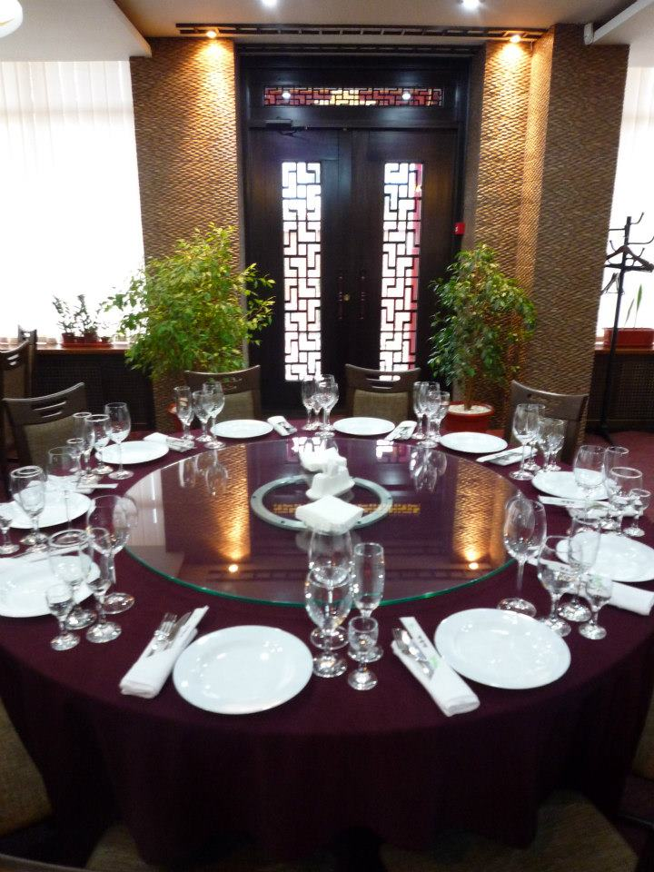
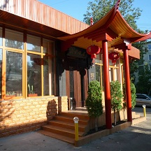
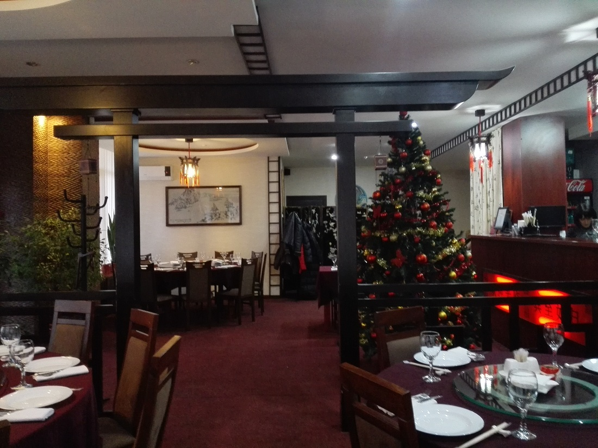
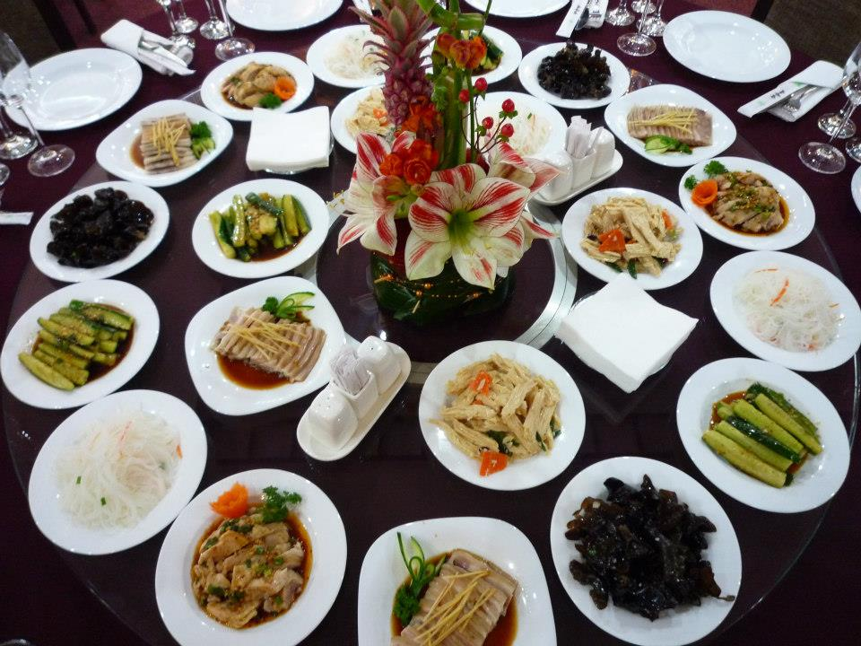
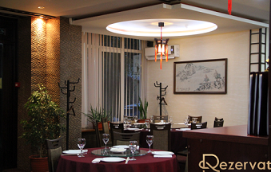
Bucate Speciale
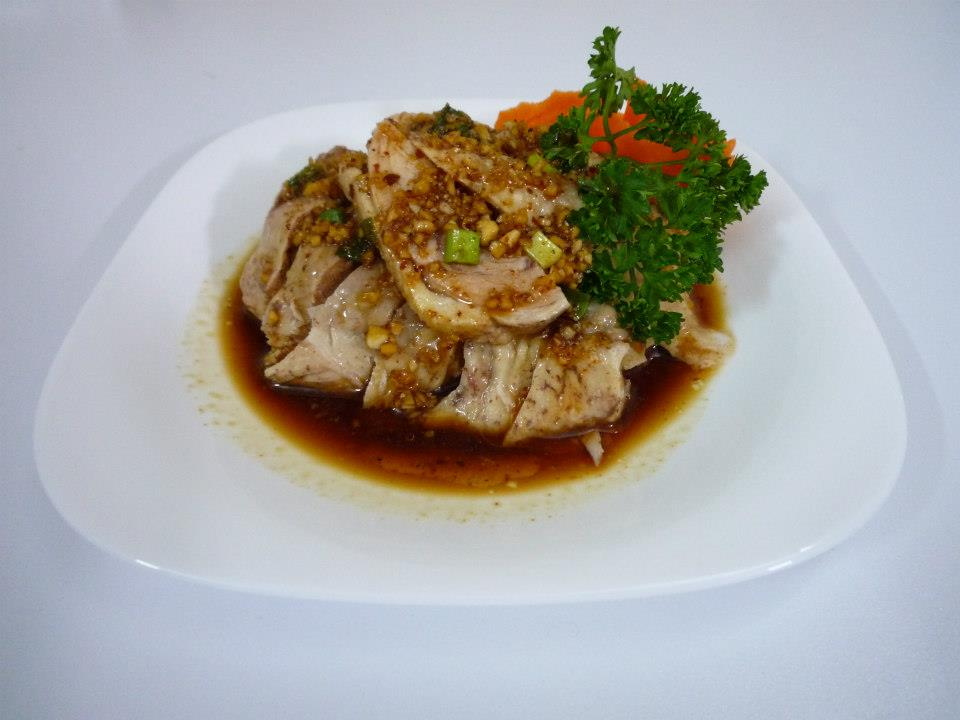
Gaina in sos de usturoi
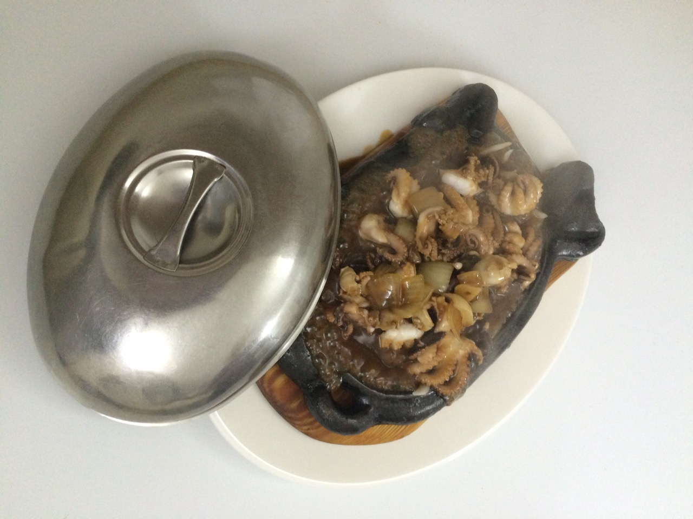
Caracatita pe tava
Rata pe chinezeste
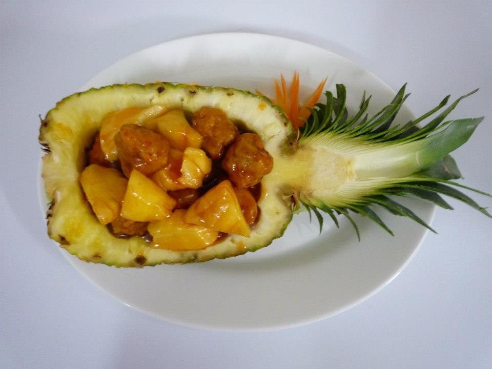
Pui in ananas
Creveti in sos alb
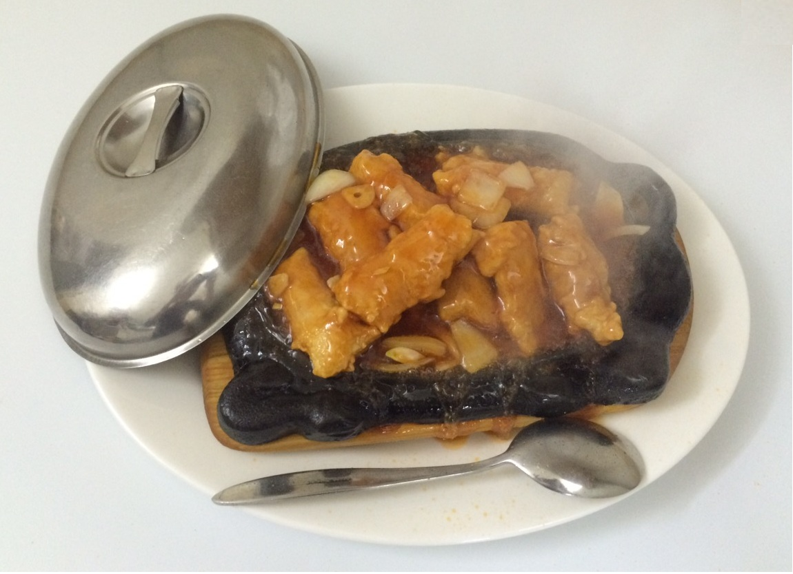
Peste pe tava
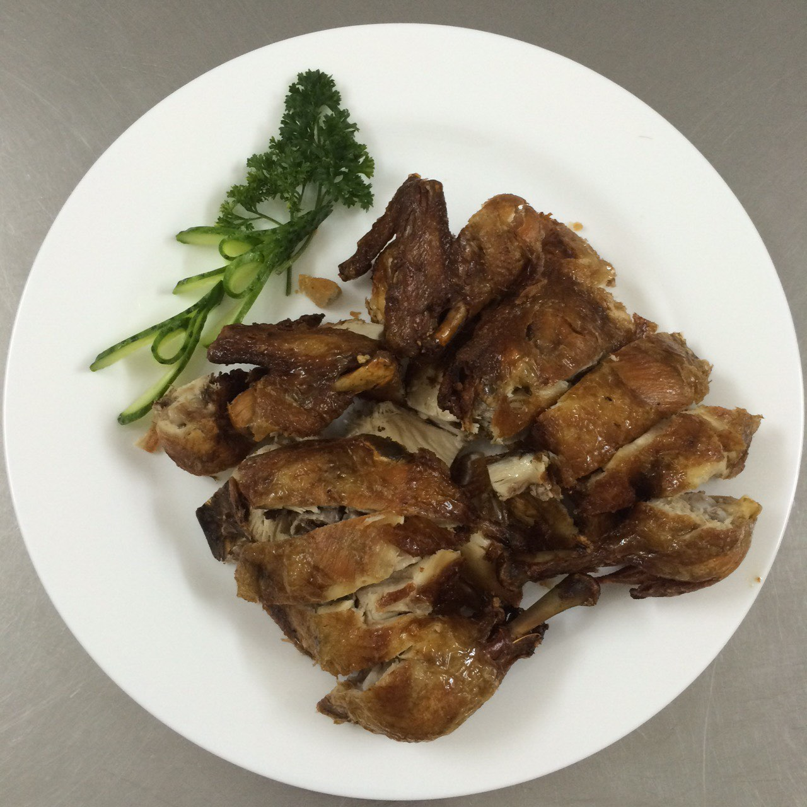
Gaina crocanta
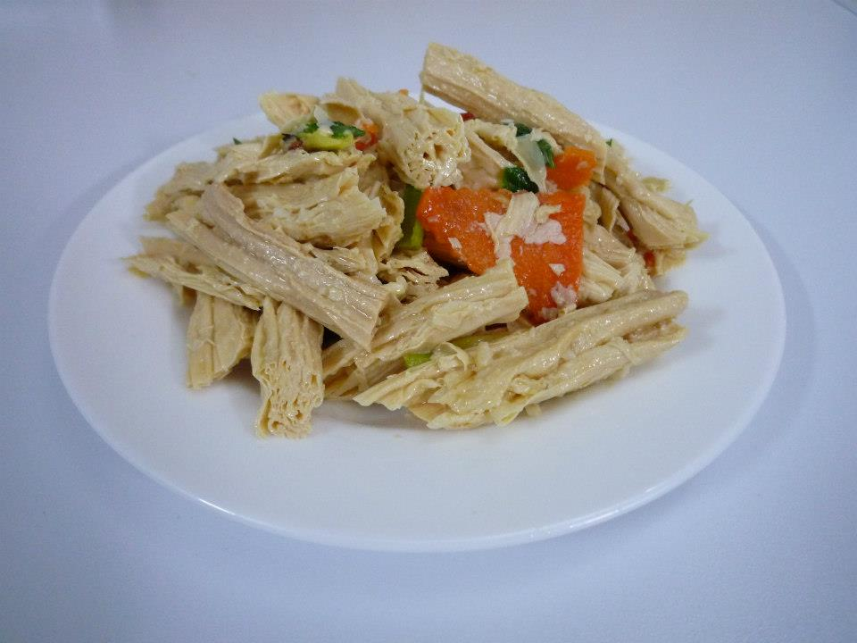
Fudju